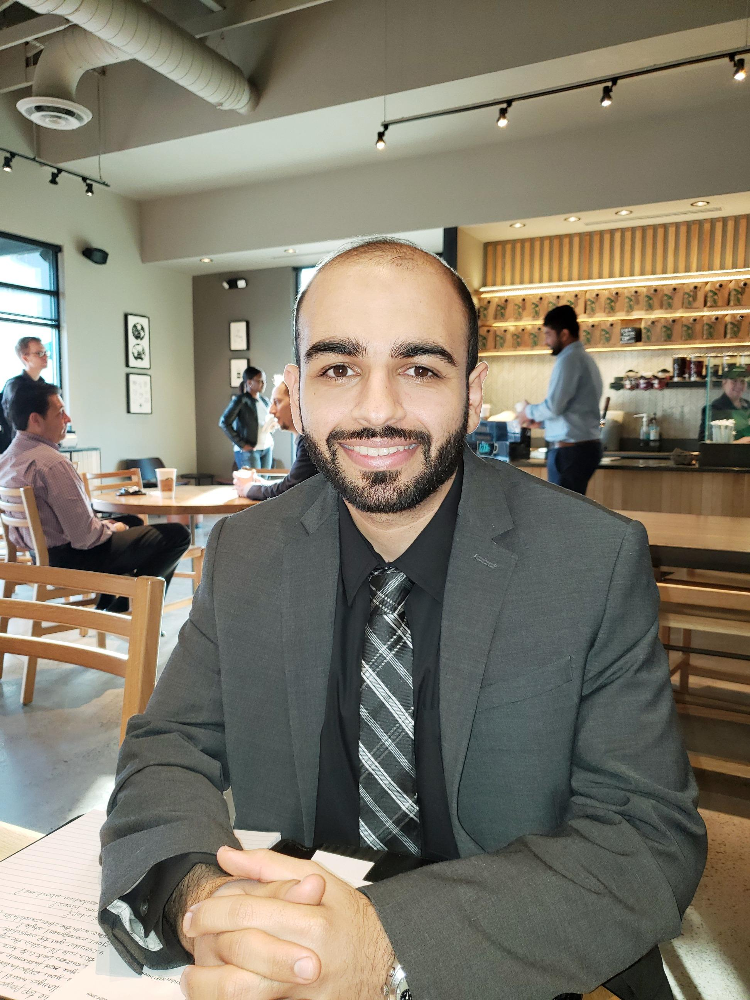

Profile
Little about me?
My name is Ali. I am from Saudi Arabia living in the United States of America. I have a degree in supply chain management, but I always have a pation for programming and technologies. So I decided to start learning web development and this is where my journy begins. I started the #100DaysOfCode challange to keep me motivated durning this journy. I will keep adding and updating this website as I learn more about HTML, CSS and JavaScript.